Una stella MichelinCucina etneaCatania
L’estetica
del gusto.
La cucina etnea raccontata dallo chef Alessandro Ingiulla, tra il fuoco dell’Etna e le onde dello Ionio.
- Cena · Mar–Dom19:30 – 23:30
- 4,7 / 5374 recensioni Google
- Una stella MichelinPiazza A. Gandolfo, 11
Galleria
Dalla terra al piatto
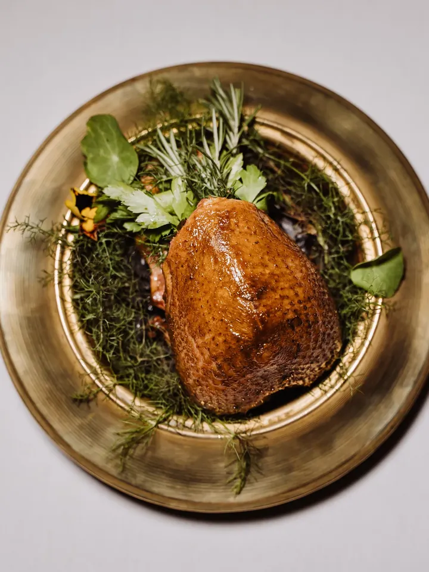
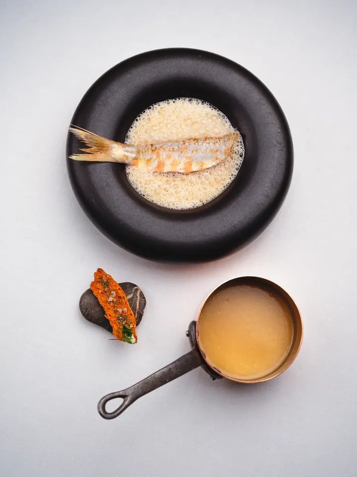
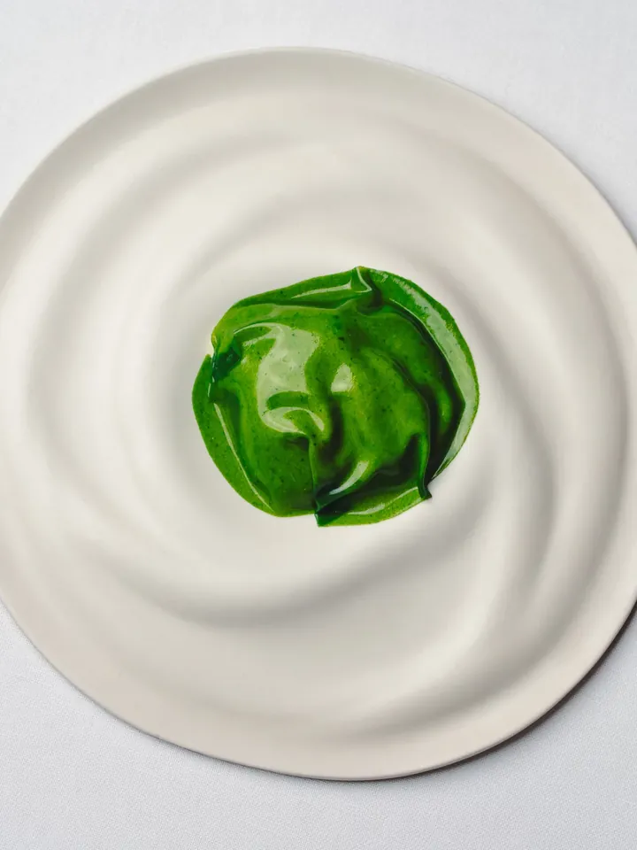
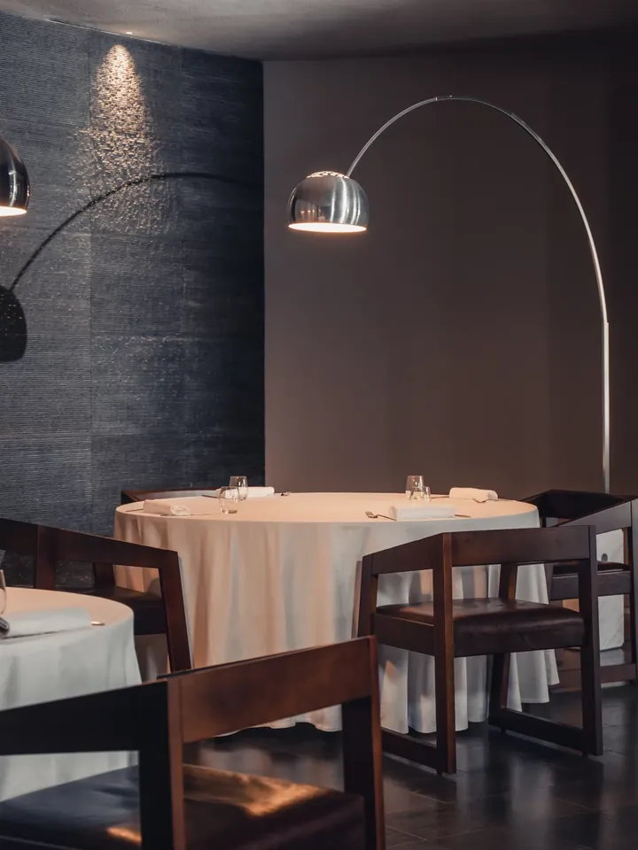
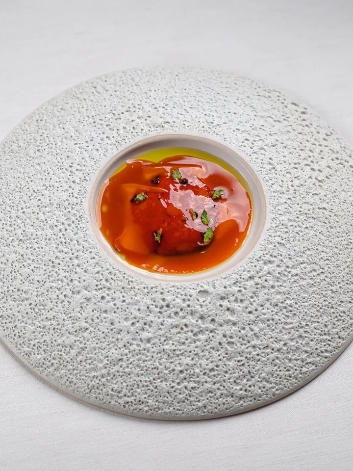
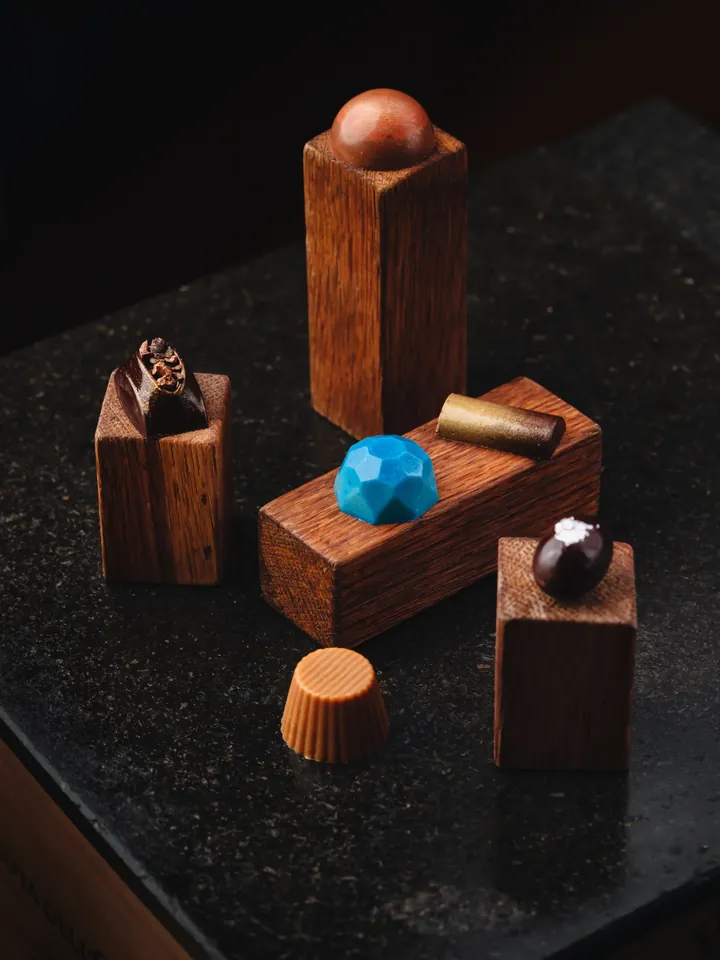
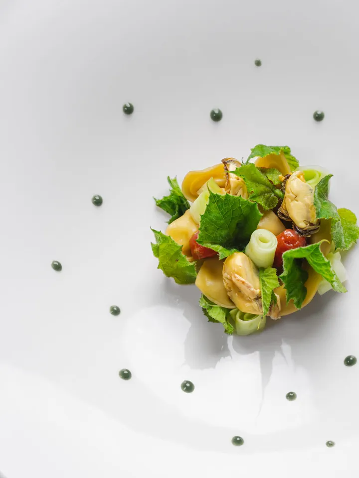
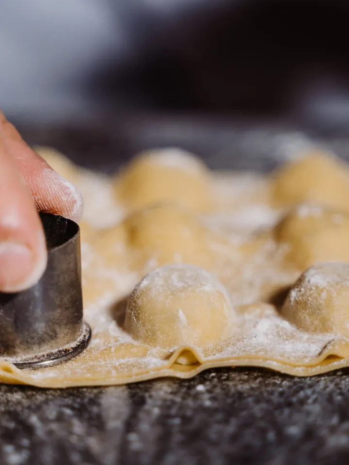
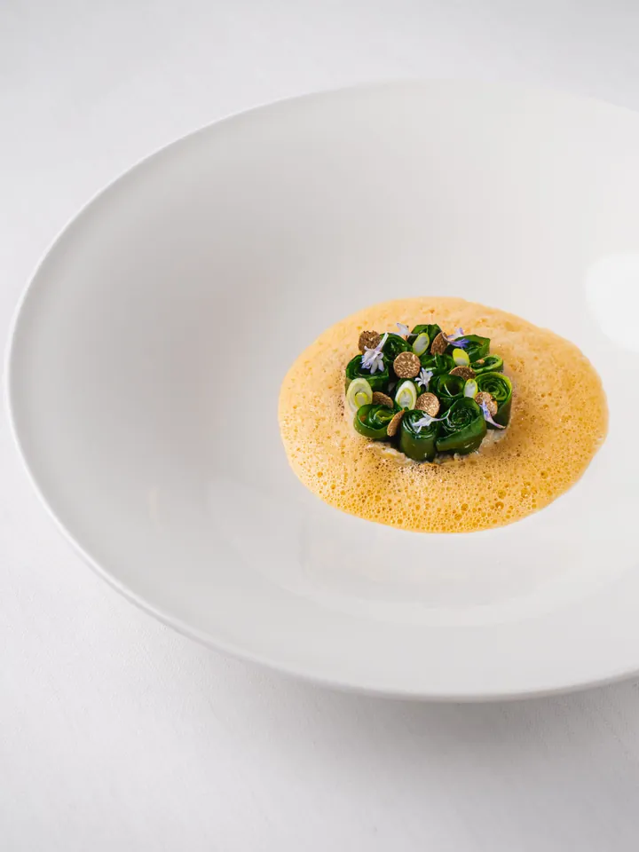
Trascina per sfogliare
La storia
Sapore e sapere, dalla terra.
Sapio, dal latino, esprime l’affinità tra sapore e sapere. Lo chef Alessandro Ingiulla e Roberta Cozzetto lo hanno aperto a Catania nel 2016: è il primo ristorante della città con una stella Michelin.
La cucina racconta il territorio etneo con l’olio, la frutta e le verdure dell’azienda agricola di famiglia e con i piccoli produttori locali. La sala, in un vecchio magazzino ristrutturato nel 2023, ospita anche esposizioni di artisti locali; la cantina mette la Sicilia al centro, dall’Etna alle sue tre valli.
- 01Tre percorsi degustazione e la carta
- 02Chef’s Table in cucina e tavolo in cantina
- 03Orto, oliveto e produttori locali
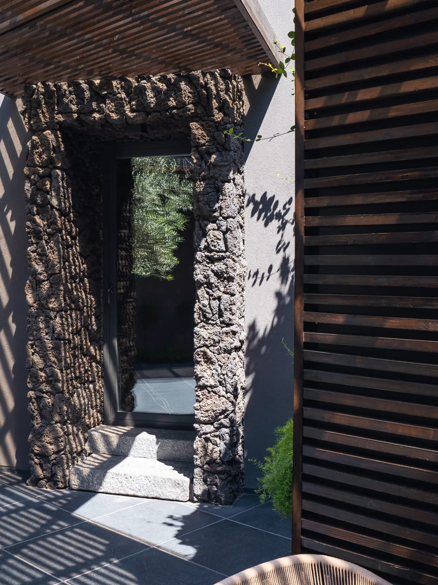
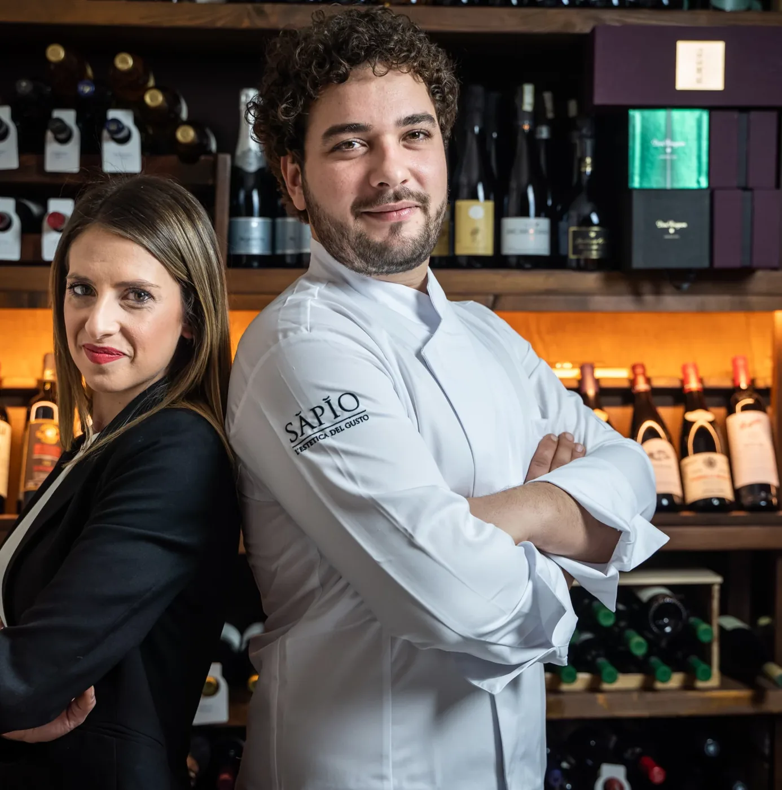
Dicono di noi
Le recensioni
Una cucina matura, che esalta le migliori produzioni siciliane.
Ingredienti di elevata qualità, passione nella ricercatezza e negli abbinamenti.
Esperienza culinaria sublime. Tutto curato e raffinato nei minimi dettagli.
Una bellissima serata, ottimo cibo e buon vino.
Una cucina geniale!
Dove siamo
Vi aspettiamo in Piazza Gandolfo.
- Indirizzo
- Piazza Antonino Gandolfo, 11
95131 Catania - Orari
- Lun chiuso
Mar 19:30 – 23:30
Mer–Dom 12:30 – 14:00 · 19:30 – 23:30 - Telefono
- 095 097 5016
350 194 7542